Many-Particle Systems
Sometimes it is desirable to study the interaction of many highly interrelated particles. Imagine, for instance, the balls on a billiard table, a collection of electrons, or a system of several bodies in space. In such a case every particle may exert a force on every other particle. We will briefly discuss these three cases here.
Charged Particles
Suppose we want to study the interaction of 20 electrons. There are thus 190 different pairs of electrons, with a force of interaction for each pair. One could in principle construct such a particle system by creating 20 charged free masses and then inserting 190
Coulomb Forces. However, in
CindyLab there is a much easier way if doing this. After the masses have been created and equipped with charges (using the
Free Mass inspector), one can simply open the
Environment inspector and check the box
Charges cause forces. Then all the particles will interact immediately.
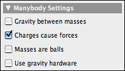 |
| Charges cause forces |
The picture below shows the situation of several charged particles trapped in a cage of bouncers.
CindyScript was used to make fast particles appear blue und slow particles appear red, with the rest of the spectrum for intermediate speeds.
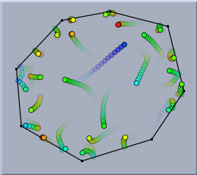 |
| Many electrically charged particles |
The corresponding fragment of
CindyScript used for this drawing is the following:
pts=allpoints();
f(x):=hue(max((min((0.5,x)),0.0)));
forall(pts,#.color=f(#.kinetic))
Gravitational n-Body Systems
In complete analogy to systems of charged particles it is also possible to work with systems of particles that attract each other by gravity, such as systems of celestial bodies. For this one simply has to check the corresponding button in the
Environment inspector.
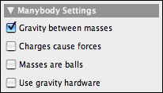 |
| Gravity between masses |
The following two pictures show two many-body systems subject to gravitational forces. The first one is a very remarkable figure-eight solution to the three-body problem (which actually is a sporadic example that was discovered only recently). The second picture shows a chaotic system of five bodies. For the simulation only the masses together with their initial velocities have to be drawn and the
Gravity between masses button to be checked.
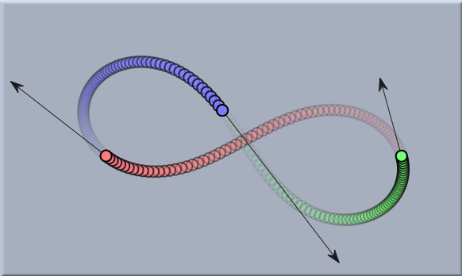 | |
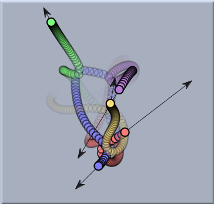 |
An island of regularity
| |
Chaotic movement
|
Masses as Balls
Finally, there is also a way in
CindyLab to mimic the behavior of balls with nonzero diameter. For this one has to check the
Masses are balls checkbox. Then each mass-object is equipped with a repulsive potential that is zero at great distances from the object but assumes very high values if the centers of the two mass-objects come within a distance that is close to the sum of their radii. For example, if two tennis balls meet, there will be an interaction between them for an instant of time. Although this approach does not exactly model the usual physical reality, it is still very appropriate for modeling balls and effects involving conservation of momentum.
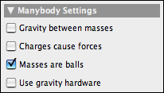 |
| Masses are balls |
The following picture shows a simulation of a billiard table shortly before a huge collision, shortly after the collision, and a long time after collision.
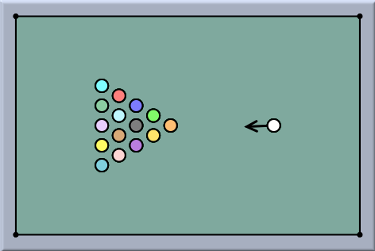 | |
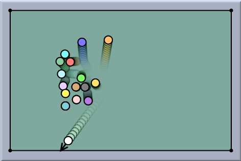 | |
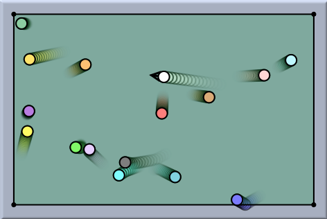 |
Before...
| |
...shortly after....
| |
...long after
|
The following example shows a standard experiment that exemplifies the conservation of momentum. Here, the masses of the pendulum are bound to circles in order to model the behavior of a stiff pendulum. Observe how the momentum is transferred from the red to the yellow ball. The radius of the force potential can be adjusted by the radius slider of the mass inspector.
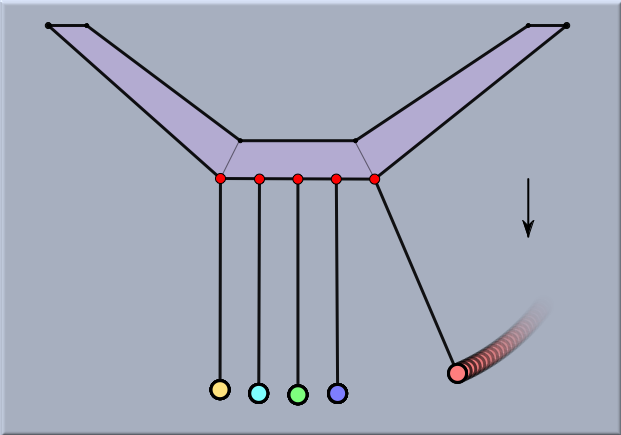 | |
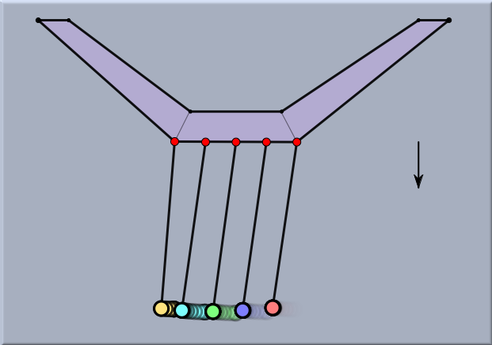 | |
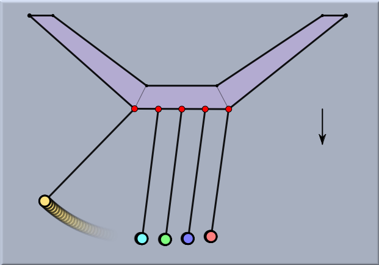 |
Before...
| |
...during....
| |
...after
|
Gravity hardware
It is also possible to control the gravity strength by a build in accelerometer of a laptop computer. This can be achieved by click on the 'Use gravity hardware' button. By this it is possible to control the behavior of the physical objects by actually physically moving the computer. A nice feature for game development.
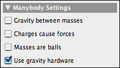 |
| Gravity hardware |
Caution
Many-body simulations may entail expensive (in terms of processing time) computations. In particular, whenever the force is attractive rather then repulsive, there may be many situations in which the automatic step-width adaptation of the
CindyLab engine comes into play.